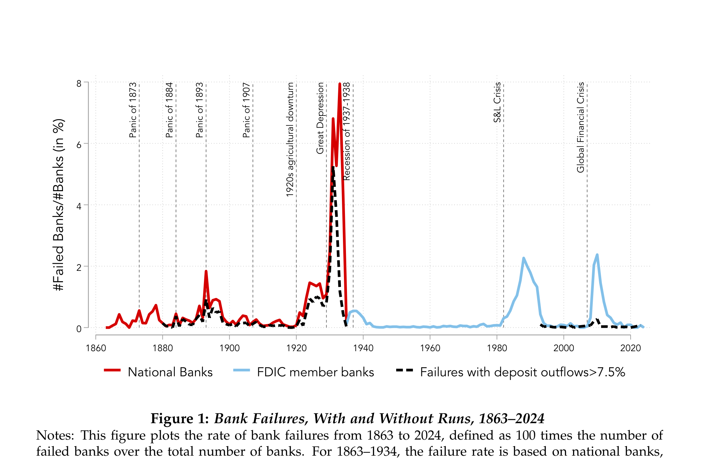
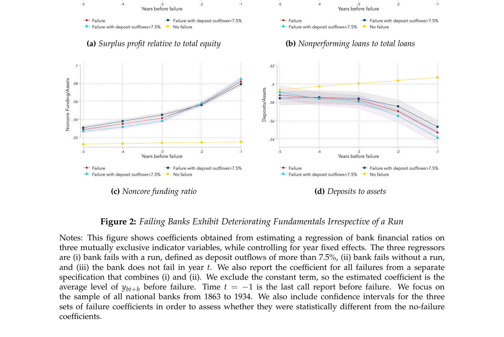

4 Bank Runs and Failures
Solvency vs. Liquidity
In the previous chapters, we showed that banks create value by transforming illiquid assets into liquid deposits, and that this same transformation makes them vulnerable to self-fulfilling runs. The Diamond-Dybvig model demonstrates that bank runs can constitute an equilibrium — but it leaves open a critical empirical question: do runs actually cause bank failures, or do banks fail because they are fundamentally insolvent?
Part 1: Historical Waves of Bank Failures

Key takeaways from Figure 1:
- The U.S. banking system has repeatedly experienced major waves of bank failures, with spikes during the Panic of 1893, the 1920s agricultural downturn, the Great Depression, and the Global Financial Crisis. Each crisis reignites the age-old debate about whether bank failures are driven by illiquidity or insolvency.
- Runs in failing banks were common before deposit insurance. The median failing bank lost 14% of its deposits before failure, and one-quarter of failures involved deposit outflows greater than 20%.
- Although the FDIC era has witnessed major waves of bank failure, failures involving runs have become much less common. After the founding of the FDIC, failing banks only lose around 2% of their deposits before failure.
- Deposit insurance has changed how banks fail. It reduces the scope for runs that impose discipline on insolvent banks. As a result, bank failures in the modern banking system are usually supervisory decisions rather than market-driven runs.
4.1 The Central Question: Why Do Banks Fail?
Figure 1 raises a fundamental question: are bank failures driven by illiquidity or insolvency?
The Liquidity View: Bank failures stem from runs on otherwise solvent banks. Depositors collectively withdraw from fundamentally sound institutions, forcing costly fire sales that render the bank insolvent. This is the classic Diamond-Dybvig (1983) mechanism studied in Chapters 2 and 3.
The Solvency View: Bank failures primarily reflect poor fundamentals — asset losses, weak capitalization, and bad management — regardless of whether depositors run. Banks fail because their assets cannot fully repay their liabilities, not because of a coordination failure among depositors.
This distinction is not merely academic. It has profound implications for financial stability policy:
If failures are liquidity-driven:
- Deposit insurance and public liquidity provision may suffice
- Central bank lending (lender of last resort) can prevent costly failures
- The focus should be on stopping panics
If failures are solvency-driven:
- Policies must ensure banks are well capitalized
- Liquidity support alone cannot prevent failures
- The focus should be on restoring solvency after adverse shocks
- Capital requirements and supervision are paramount
In this chapter, we synthesize the empirical evidence on this question, drawing primarily on the comprehensive review by Correia, Luck, and Verner (2026). Their conclusion is striking: bank failures — both with and without runs — are almost always related to poor fundamentals. Runs can accelerate the failure of already-weak banks, but they rarely cause the failure of fundamentally sound institutions.
The key evidence is in Figure 2 below, which tracks four bank fundamentals in the five years before failure for all national banks from 1863 to 1934, separately for failures with a run (deposit outflows >7.5%) and without a run:

Four findings stand out:
- Profitability (panel a, surplus/equity) declines steadily for failing banks starting five years before failure. The gradual onset over years rules out a sudden panic as the primary trigger.
- Asset quality (panel b, NPL/loans) deteriorates well before failure and accelerates sharply in the final two years — a direct signal of fundamental weakness building up.
- Deposit reliance (panel d, deposits/assets) drifts gradually lower, consistent with depositors slowly reacting to weakness rather than a sudden run-driven cliff.
- The crucial finding across all four panels: banks that fail with a run (red) look virtually identical to those that fail without a run (blue). Runs do not select healthier banks for failure — they strike already-weak ones.
To formalize this distinction, we turn to an illustrative framework. The framework makes precise where CLV’s finding sits: in the historical evidence, failures clustered in the fundamentally insolvent zone, not in the panic zone where runs cause the failure of otherwise viable banks. We then extend the framework to incorporate deposit franchise value (Drechsler, Savov, Schnabl, and Wang, 2025) and solvency runs driven by mark-to-market losses (Jiang, Matvos, Piskorski, and Seru, 2024). These extensions raise a pointed challenge: features of modern banking — low deposit betas, high uninsured leverage, and liquid long-duration portfolios — may widen the panic zone substantially, making CLV’s historical conclusion less applicable today. We then turn to the full 160-year body of evidence and the policy implications.
Part 2: An Illustrative Framework
4.2 The Traditional Framework: Liquidity versus Solvency
We begin with a simple illustrative framework from Correia, Luck, and Verner (2026) that summarizes key themes from the theoretical literature on bank runs and failures (see, e.g., Diamond and Dybvig, 1983; Morris and Shin, 2003; Rochet and Vives, 2004; Goldstein and Pauzner, 2005). The framework distinguishes between fundamentally insolvent banks (that would have failed even absent a run) and banks whose failure was caused by a run (that would have survived absent sudden withdrawals).
4.2.1 Setup
There are two dates \(t \in \{1, 2\}\). At \(t = 1\), a bank holds a mix of liquid risk-free cash \(C\) and illiquid risky loans \(L\), financed by deposits \(D\) and equity \(E\). Total initial assets are:
\[ A = C + L = D + E \]
We assume that this initial capital structure is exogenous. Crucially, we assume that \(D > C\), so the bank lacks the liquid funds to pay all depositors at once in the initial period. There is a continuum of risk-neutral depositors, each holding one unit of deposits. There is no discounting, deposits pay no interest, and the return on cash is zero.
The gross return on loans is \(\theta\), a deterministic parameter observable to all depositors at \(t = 1\). Thus, at \(t = 2\) the bank’s loan portfolio equals \(\theta L\).
4.2.2 The Depositor’s Decision
The only decision in the model is each depositor \(i\)’s choice at \(t = 1\) to maintain or withdraw their funds after observing \(\theta\). This variable is \(d_i \in \{0, 1\}\), with \(d_i = 1\) indicating withdrawal.
The bank can only serve depositors using its cash holdings. The loan portfolio is illiquid at \(t = 1\). We assume sequential service of withdrawals: depositors who withdraw while the bank is liquid receive full repayment; those who withdraw when it is illiquid receive only a pro rata share in receivership.
Denote the total amount of withdrawal requests in the initial period as \(w = \int d_i \, di\).
4.2.3 Receivership and Value Destruction
The key friction is that if the bank runs out of cash in this period, \(w > C\), the bank is placed into receivership. In receivership, the loan portfolio’s value is reduced to \((1 - \rho)\theta L\). The reduction in value \(\rho\) captures the notion that the value of loans may be higher when held within the bank than outside of it, e.g., due to the inalienability of a banker’s human capital (Diamond, 1984; Hart and Moore, 1994; Diamond and Rajan, 2001).
4.2.4 Three Regions of Bank Health
4.2.4.1 Region 1: Fundamental Insolvency
The bank is fundamentally insolvent when its assets cannot fully repay depositors, so it would default even without withdrawals. This occurs when:
\[ \theta L + C < D \implies \theta < \frac{D - C}{L} \]
\[ \theta^{Solvency} \equiv \frac{D - C}{L} \]
When \(\theta < \theta^{Solvency}\), the bank is fundamentally insolvent. It will be optimal for each depositor to withdraw even if others do not, as the sequential service constraint implies a chance of full repayment by arriving at the front of the queue. Thus, a bank run necessarily follows for \(\theta < \theta^{Solvency}\).
4.2.4.2 Region 3: Safe from Runs
When is a bank run an equilibrium even if the bank is not fundamentally insolvent (\(\theta > \theta^{Solvency}\))? Illiquidity occurs when withdrawal requests \(w\) exceed available cash (\(w > C\)). If the bank becomes illiquid, its remaining liabilities are \(D - C\). The bank is then placed into receivership, and the value of the loan portfolio at \(t = 2\) becomes \((1 - \rho)\theta L\).
For a run not to be an equilibrium, the bank must have enough funds to pay all remaining liabilities at \(t = 2\). This is the case if \((1 - \rho)\theta L \geq D - C\).
\[ \theta^{Liquidity} \equiv \frac{D - C}{(1 - \rho)L} > \theta^{Solvency} = \frac{D - C}{L} \]
When \(\theta > \theta^{Liquidity}\), the bank can always meet its obligations even in the worst case (all depositors run and the loan portfolio suffers the receivership discount). In this region, no run can occur as an equilibrium because depositors know they will be repaid regardless.
4.2.4.3 Region 2: The Panic Region
For \(\theta\) in this intermediate range, self-fulfilling runs constitute an equilibrium. If a bank fails with \(\theta\) in this range, the panic run itself is the cause of failure, as the bank would have survived absent withdrawals. In contrast, for \(\theta < \theta^{Solvency}\), the bank run is merely the consequence of imminent failure.
The following diagram illustrates these three regions:
4.2.5 Pinning Down the Run Threshold
In the panic region \([\theta^{Solvency}, \theta^{Liquidity})\), there are two pure-strategy equilibria: one where a bank run occurs and one where there is no run. The literature provides two approaches to pin down the probability of failure.
Approach 1: Sunspot Equilibria. Depositors coordinate on a publicly observed random “sunspot” variable (Diamond and Dybvig, 1983; Cole and Kehoe, 2000; Peck and Shell, 2003). The probability of the sunspot could be constant (runs equally likely for all banks in this range) or perhaps more realistically, declining in \(\theta\) — so runs are more likely in weaker banks (Ennis and Keister, 2003; Gertler and Kiyotaki, 2015).
Approach 2: Global Games. Relaxing the common knowledge assumption, each agent receives a slightly noisy private signal of \(\theta\) (Morris and Shin, 1998, 2003; Rochet and Vives, 2004; Goldstein and Pauzner, 2005). This results in a unique threshold equilibrium where all agents withdraw when \(\theta\) falls short of a cutoff:
\[ \theta^* \in (\theta^{Solvency}, \theta^{Liquidity}) \]
Importantly, this implies the occurrence of panic runs that cause the failure of banks that would have survived absent the run — when \(\theta \in (\theta^{Solvency}, \theta^*)\). The run threshold \(\theta^*\) depends on parameters such as \(\rho\) that do not affect fundamental solvency but do affect the degree of strategic complementarity among depositors.
4.2.6 Testable Hypotheses
We now derive empirical predictions from this illustrative framework.
Bank failures are more likely among banks with weak fundamentals (low \(\theta\)).
The first insight is that \(\theta\) must be sufficiently low for a bank failure to occur. If \(\theta < \theta^{Solvency}\), a run and failure are unavoidable. If fundamentals are very strong, \(\theta > \theta^{Liquidity}\), the bank never fails.
Note that since \(D - C = L - E\), both \(\theta^{Solvency}\) and \(\theta^{Liquidity}\) are decreasing in the capital ratio \(E/L\). Hence, higher capital ratios reduce the likelihood of both fundamental and run-triggered failures.
Recovery rates for depositors are increasing in bank fundamentals \(\theta\) and are thus lower in fundamentally insolvent banks than in panic-induced failures.
The pro rata share paid out to depositors in receivership is \((1 - \rho)\theta L / (D - C)\), which is increasing in \(\theta\). If \(\rho\) is known, the recovery rate in receivership can allow one to infer information about \(\theta\) and thus whether the bank was fundamentally insolvent.
Interbank liquidity provision reduces the scope for runs to cause bank failures.
Suppose at \(t = 1\) the bank can raise additional cash \(Z\) through wholesale or interbank funding, where \(Z \leq \lambda \theta L\) and \(\lambda \in [1 - \rho, 1]\) captures frictions in the interbank market. With a deep interbank market, the threshold for self-fulfilling runs becomes lower:
\[ \theta^{Liquidity, Interbank} \equiv \frac{D - C}{\lambda L} \leq \theta^{Liquidity} \]
The range of fundamentals for which runs can cause insolvency is shrinking in the depth of the interbank market \(\lambda\). In the extreme case where \(\lambda = 1\), self-fulfilling runs never constitute an equilibrium.
If enough depositors are sleepy, banks can be insolvent but liquid, increasing the predictability of failure.
Let \(\overline{D}\) denote the depositors who never withdraw. If sufficiently many depositors are sleepy such that \(D - \overline{D} \leq C\), then the bank avoids receivership even if all run-prone depositors withdraw. Even if \(\theta < \theta^{Solvency}\), the bank is not closed by a run at \(t = 1\) and fails only in \(t = 2\). Bank failure at \(t = 2\) is predictable in \(t = 1\).
More generally, a larger mass of sleepy depositors weakens strategic complementarities among run-prone depositors and reduces the scope for self-fulfilling runs.
4.3 The March 2023 Banking Crisis: Motivating the Extensions
The traditional CLV framework was developed to explain 160 years of U.S. bank failures, and the evidence (presented in Parts 3–7 below) overwhelmingly supports its central conclusion: bank failures are fundamentally about solvency. But the March 2023 banking turmoil — the failures of Silicon Valley Bank, Signature Bank, and First Republic Bank in rapid succession — revealed features of modern bank fragility that the traditional framework does not fully capture.
Several observations from March 2023 motivate extensions to the baseline framework:
Liquid assets, not illiquid loans. The banks that failed held large portfolios of Treasury bonds and agency MBS — perfectly liquid securities with no receivership discount (\(\rho \approx 0\)). In the traditional framework, \(\rho = 0\) eliminates the panic region entirely. Yet these banks clearly experienced self-fulfilling run dynamics.
Deposit franchise dependence. These banks paid deposit rates far below market rates, creating enormous intangible franchise values (\(F\)). Their solvency on a going-concern basis depended on retaining this franchise — an asset that vanishes in a run. The traditional framework’s balance sheet (\(C + L = D + E\)) does not account for this off-balance-sheet asset.
Systematic losses from monetary tightening. The Federal Reserve’s aggressive rate increases in 2022–2023 reduced the mark-to-market value of fixed-rate securities across the entire banking system. Unlike traditional idiosyncratic loan losses (low \(\theta\) for a particular bank), these losses were systematic — all banks holding duration were affected simultaneously.
Uninsured deposit composition as the key differentiator. Many banks suffered similar mark-to-market losses, but only those with extreme uninsured deposit concentration faced run pressure. It was the composition of liabilities — not just the quality of assets — that determined which banks were vulnerable.
These observations motivate four extensions to the traditional framework, each building on the CLV structure while introducing features specific to modern banking.
4.3.1 Extension 1: Deposit Franchise Runs (Drechsler, Savov, Schnabl, and Wang, 2025)
CLV’s empirical finding — that bank failures overwhelmingly reflect deteriorating fundamentals, with the panic zone rarely populated in practice — was established for a banking system where deposits were relatively homogeneous and banks’ going-concern value was modest. Modern banking has two features that change this calculus significantly: banks earn large rents from their deposit franchise, and a rising share of deposits is uninsured and therefore run-prone. Drechsler, Savov, Schnabl, and Wang (2025) show that these features widen the panic zone below \(\theta^{Solvency}\), creating a new class of run-fragile banks that CLV’s framework does not capture.
The illustrative framework above treats bank assets as consisting solely of cash \(C\) and loans with observable return \(\theta\). In practice, however, banks possess another valuable asset that does not appear on the balance sheet: the deposit franchise. Drechsler, Savov, Schnabl, and Wang (2025) develop a model of deposit franchise runs that enriches the solvency-liquidity framework in an important way.
4.3.1.1 The Deposit Franchise as an Intangible Asset
Banks typically pay deposit rates well below market interest rates. The net present value of this below-market funding — the stream of future profits from maintaining the deposit base — constitutes the deposit franchise value \(F\). This franchise value is an intangible going-concern asset: it exists only as long as the bank continues to operate and retain its deposits.
The deposit franchise value is approximately:
\[ F \approx \frac{(1 - \beta) \cdot r \cdot D^U}{\delta} \]
where \(\beta\) is the deposit beta (sensitivity of deposit rates to market rates), \(r\) is the market interest rate, \(D^U\) is uninsured deposits, and \(\delta\) is a discount rate. The franchise value is larger when:
- Deposit beta is low (\(\beta\) small): the bank pays far below market rates
- Uninsured deposits are large (\(D^U\) large): more deposits generating below-market funding
- Interest rates are high (\(r\) large): wider spread between market rates and deposit rates
4.3.1.2 How the Deposit Franchise Modifies the Framework
Incorporating the deposit franchise into our illustrative framework changes the bank’s value as follows:
Without franchise (CLV baseline):
- No-run value: \(\theta L + C - D\)
- Run value: \((1-\rho)\theta L + C - D\)
With franchise (Drechsler et al.):
- No-run value: \(\theta L + C + F - D\)
- Run value: \((1-\rho)\theta L + C - D\)
The critical asymmetry is that \(F\) is a conditional asset: worth \(F\) when deposits stay, worth zero the instant they run. This changes the two zone boundaries asymmetrically:
| Threshold | Formula | Effect of \(F\) |
|---|---|---|
| \(\theta^{Solvency}\) — lower boundary of run-fragile zone | \(\dfrac{D - C - \mathbf{F}}{L}\) | Shifts left by \(F/L\) |
| \(\theta^{Liquidity}\) — upper boundary of run-fragile zone | \(\dfrac{D - C}{(1-\rho)L}\) | Unchanged (\(F = 0\) in a run) |
Because \(F\) vanishes in the run state, the liquidation threshold is completely unaffected. The franchise therefore rescues some banks from “certain failure” into “conditionally viable” — but conditional on depositors not running. A bank with \(\theta^{Solvency}(F) \leq \theta < \theta^{Solvency}\) has:
- Positive going-concern equity: \(\theta L + C + F - D > 0\) ✓
- Negative run-state equity: \((1-\rho)\theta L + C - D < 0\) ✗
It is solvent as a going concern and insolvent in liquidation at the same time. The lower boundary of the run-fragile zone shifts left; the upper boundary does not. The zone widens.
4.3.1.3 Four Regions Instead of Three
The deposit franchise extends CLV’s three regions to four by shifting the left boundary of the run-fragile zone:
\[ \theta^{Solvency}(F) < \theta^{Solvency} < \theta^{Liquidity} \]
| Region | Range | Outcome |
|---|---|---|
| Always fails | \(\theta < \theta^{Solvency}(F)\) | Insolvent even including franchise value |
| Franchise-dependent | \(\theta^{Solvency}(F) \leq \theta < \theta^{Solvency}\) | Book-value insolvent; cannot survive a run |
| Panic zone (CLV) | \(\theta^{Solvency} \leq \theta < \theta^{Liquidity}\) | Book-value solvent; can’t survive a run |
| Always survives | \(\theta \geq \theta^{Liquidity}\) | Solvent even in liquidation |
The franchise-dependent zone is the key contribution of Drechsler et al. (2025). Banks in this region appear solvent only because their deposit franchise value covers the gap between assets and liabilities. But this solvency is illusory — it is contingent on depositor confidence. Any shock that triggers withdrawals destroys the franchise and reveals the underlying book-value insolvency.
The student’s natural intuition is: franchise value is an asset → it adds to equity → higher equity → safer bank → smaller panic region. This is correct for unconditional assets, but wrong for a run-destroyable one. The contrast with regular capital makes the difference precise:
| Going-concern equity | Run-state equity | Lower boundary \(\theta^{Solvency}\) | Upper boundary \(\theta^{Liquidity}\) | Run-fragile zone width | |
|---|---|---|---|---|---|
| Regular capital \(\Delta C\) | \(+\Delta C\) | \(+\Delta C\) | Shifts left \(\Delta C/L\) | Shifts left \(\Delta C/((1{-}\rho)L)\) | Unchanged |
| Franchise \(F\) | \(+F\) | \(0\) | Shifts left \(F/L\) | Unchanged | Widens by \(F/L\) |
Regular capital helps in both states, so both boundaries shift left together and the zone width is unchanged. The franchise helps only in the no-run state, so only the lower boundary moves — the upper boundary stays fixed because \(F\) contributes nothing to liquidation value. The zone widens.
The franchise-dependent zone is therefore best understood as a downward extension of the panic region. In both zones the same self-fulfilling logic applies: deposits staying → bank survives; deposits running → bank fails. The only difference is what covers the gap:
| Zone | What covers the gap | What a run destroys |
|---|---|---|
| Panic zone (\(\theta^{Solvency} \leq \theta < \theta^{Liquidity}\)) | Loan liquidation value | Fire sale discount \(\rho\theta L\) |
| Franchise-dependent zone (\(\theta^{Solvency}(F) \leq \theta < \theta^{Solvency}\)) | Franchise value \(F\) | The entire franchise |
Adding \(F\) therefore widens the total run-fragile zone from \([\theta^{Solvency}, \theta^{Liquidity})\) to \([\theta^{Solvency}(F), \theta^{Liquidity})\), an expansion of exactly \(F/L\):
\[ \underbrace{(\theta^{Liquidity} - \theta^{Solvency}(F))}_{\text{total run-fragile zone}} = \underbrace{(\theta^{Liquidity} - \theta^{Solvency})}_{\text{CLV panic region}} + \underbrace{\frac{F}{L}}_{\text{franchise extension}} \]
A larger franchise → wider run-fragile zone → higher run threshold \(\theta^*\) (Extension 3 below). The asset that protects the bank in normal times is precisely what expands its vulnerability to self-fulfilling runs.
4.3.1.4 The Interest Rate Paradox
The deposit franchise creates a natural interest rate hedge: when rates rise, asset values fall (mark-to-market losses on fixed-rate loans and securities) but the franchise value rises (wider spread between market rates and deposit rates). The bank’s total value may be stable even as \(\theta\) declines.
However, this hedge works only if deposits stay. If uninsured depositors run, the franchise is destroyed, and the bank is left with only its depreciated assets. This creates a paradox:
Banks with the largest deposit franchise values are also the most fragile:
- A large \(F\) shifts \(\theta^{Solvency}(F)\) far below \(\theta^{Solvency}\), creating a wide franchise-dependent zone
- The bank appears healthy (because \(\theta > \theta^{Solvency}(F)\)) while being book-value insolvent (\(\theta < \theta^{Solvency}\))
- The gap between appearance and reality grows with the size of the franchise
- Since \(F\) increases with interest rates, the franchise-dependent zone widens when rates rise — precisely when mark-to-market losses are largest
4.3.1.5 SVB Through the Franchise Lens
Silicon Valley Bank is the canonical example of a deposit franchise run:
- Low deposit beta (\(\beta \approx 0.15\)): SVB paid far below market rates, creating an enormous franchise value
- 95%+ uninsured deposits: Nearly all of SVB’s franchise was runnable
- Long-duration assets: Heavy concentration in fixed-rate MBS and Treasuries
When the Fed raised rates aggressively in 2022:
- SVB’s asset values fell sharply (\(\theta\) declined — over $15 billion in unrealized losses)
- SVB’s franchise value \(F\) rose (wider deposit spread), offsetting the asset losses on paper
- SVB had positive reported (GAAP) book equity — it was not book-value insolvent in the traditional regulatory sense (\(\theta > \theta^{Solvency}\) on a GAAP basis). But once its liquid assets were marked to market, MTM losses (~$34B) exceeded book equity (~$16B), making it mark-to-market insolvent (\(\theta < \theta^{Solvency}\) on a comprehensive MTM basis)
- The March 2023 run destroyed the franchise, instantly revealing the insolvency
Contrast with Citigroup: Citigroup also had a large volume of uninsured deposits, but it paid close to market rates (high \(\beta\)). This meant a small franchise value \(F\), and hence a narrow franchise-dependent zone. Citigroup was not exposed to a deposit franchise run because its solvency did not depend on an intangible franchise asset.
The Drechsler et al. (2025) framework reinforces CLV’s central thesis while adding an important nuance:
- CLV’s conclusion holds: Bank failures are fundamentally about solvency. SVB’s failure was not a run on a sound bank — it was a bank whose solvency depended on retaining a fragile intangible asset.
- The nuance: “Solvency” has layers. A bank can be franchise-value solvent but book-value insolvent. The run doesn’t cause failure of a truly solvent bank — it destroys the illusion of solvency created by the deposit franchise.
- The policy implication: Banks should hold capital sufficient to cover the potential loss of their uninsured deposit franchise. Risk management requires treating the franchise as a contingent asset, not a permanent one. Drechsler et al. (2025) suggest that banks can protect themselves by purchasing interest rate options or by increasing capital buffers as rates rise — ensuring that solvency does not depend on an asset that vanishes in a run.
4.3.2 Extension 2: Solvency Runs with Liquid Assets (Jiang, Matvos, Piskorski, and Seru, 2024)
The CLV framework identifies asset illiquidity — the receivership discount \(\rho > 0\) — as the source of the panic region. If assets were perfectly liquid (\(\rho = 0\)), the two thresholds \(\theta^{Solvency}\) and \(\theta^{Liquidity}\) would coincide and the panic region would vanish.
Jiang, Matvos, Piskorski, and Seru (2024) show that this conclusion is premature. A panic region can arise even when \(\rho = 0\) through a different mechanism: the partial destruction of the deposit franchise by uninsured depositor runs. To see this, we extend the CLV balance sheet and combine it with the deposit franchise \(F\) introduced by Drechsler et al.
4.3.2.1 Extending the Balance Sheet
In practice, banks hold both illiquid loans and liquid marketable securities. Extend the CLV balance sheet by adding liquid securities \(S\) (e.g., Treasury bonds, agency MBS):
\[ C + S + L = D + E \qquad \text{where } D = D^I + D^U \]
Here \(S\) denotes liquid securities (e.g., Treasuries, agency MBS) at book value and deposits split into insured \(D^I\) and uninsured \(D^U\).
Two key variables are defined at the outset and used throughout:
\(\theta_S = r_0 / r_f\): the fundamental parameter for securities — the ratio of the bond’s coupon rate \(r_0\) to the current market yield \(r_f\). This is the securities analog of \(\theta\) (the loan return) in the CLV framework. When the Fed raises rates (\(r_f > r_0\)), \(\theta_S < 1\).
MtM loss \(= (1 - \theta_S) S\): the mark-to-market (unrealized) loss on the securities portfolio. This is the variable directly observable in data — it is the gap between book value \(S\) and market value \(\theta_S S\).
These securities are perfectly liquid: they can always be sold at \(\theta_S S\) with no receivership discount (\(\rho = 0\) for \(S\)). The illiquid loans \(L\) still carry the CLV discount \(\rho\). The March 2023 episode illustrates both variables concretely: the Fed’s rate increases compressed \(\theta_S\) across the system, generating MtM losses that depositors could observe in public filings.
4.3.2.2 How the Extended Balance Sheet Changes the Framework
With three asset classes, the deposit franchise \(F\), and heterogeneous deposits, the no-run and run values become:
CLV baseline (\(C + L\) only):
- No-run value: \(\theta L + C - D\)
- Run value: \((1-\rho)\theta L + C - D\)
- Wedge: \(\rho\theta L\)
Extended (\(C + S + L\), with \(F\)):
- No-run value: \(\theta_S S + \theta L + C + F - D\)
- Run value: \(\theta_S S + (1-\rho)\theta L + C + F - \frac{D^U}{D}F - D\)
- Wedge: \(\rho\theta L + \frac{D^U}{D}F\)
A run now destroys value through two channels simultaneously:
- Fire sale of illiquid loans (\(\rho\theta L\)): CLV’s original mechanism — loans sold in receivership lose value
- Franchise destruction on uninsured deposits (\(\frac{D^U}{D}F\)): The franchise is proportional to deposits. When uninsured depositors (a mass \(D^U\)) withdraw, the franchise on their deposits — equal to a fraction \(D^U/D\) of the total franchise \(F\) — is destroyed
Note the important difference from Drechsler et al.: there, a run destroys the entire franchise \(F\). Here, only the franchise on uninsured deposits is destroyed (\(\frac{D^U}{D} F \leq F\)). The franchise on insured deposits \(D^I\) is preserved, because insured depositors have no incentive to run. This partial destruction is what allows the framework to generate a panic region whose width depends on the uninsured deposit share.
For a traditional bank with primarily illiquid loans (\(S \approx 0\)): CLV’s \(\rho\) mechanism dominates. The panic region exists because fire sales destroy loan value.
For a modern bank with heavy securities holdings (\(L \approx 0\)): Jiang’s franchise mechanism dominates. Even with \(\rho = 0\) (all assets liquid), a panic region exists because the run destroys the franchise on runnable deposits.
For a bank with both \(S\) and \(L\): both mechanisms operate simultaneously, and the total wedge \(\rho\theta L + \frac{D^U}{D}F\) is larger than either alone.
4.3.2.3 Special Case: Suppressing Loan Illiquidity (\(L = 0\))
To isolate the Jiang mechanism, suppose the bank holds no illiquid loans — all earning assets are liquid securities. Setting \(L = 0\), the bank holds \(C + S = D + E\), the receivership discount \(\rho\) plays no role, and CLV’s fire-sale channel is shut down entirely. Despite \(\rho = 0\), the three-region structure survives:
\[ \theta_S^{Solvency} = \frac{D - C - F}{S} \]
The bank is fundamentally insolvent (even including its franchise value) when \(\theta_S\) falls below this threshold. Note this coincides with \(\theta^{Solvency}(F)\) from the Drechsler et al. extension — both incorporate \(F\) in the going-concern value.
\[ \theta_S^{Liquidity} = \theta_S^{Solvency} + \frac{D^U F}{D S} \]
Above this threshold, the bank survives even if all uninsured depositors run. We call this the liquid run threshold — it plays the same role as \(\theta^{Liquidity}\) in the CLV framework (the upper bound of the panic region), but it arises from franchise destruction alone, not fire sales (\(\rho = 0\)).
The width of the panic region is:
\[ \theta_S^{Liquidity} - \theta_S^{Solvency} = \frac{D^U \cdot F}{D \cdot S} \]
This is increasing in uninsured deposits (\(D^U\)) and the franchise value (\(F\)), and decreasing in the size of the securities portfolio (\(S\)). The panic region is wider when the bank has more runnable funding relative to its liquid assets.
The following diagram illustrates these three regions. Compare with the CLV diagram above: the axis is now \(\theta_S\) (mark-to-market return on securities) rather than \(\theta\) (loan return), and the panic region is created by franchise destruction rather than asset illiquidity:
| Region | Condition | Outcome |
|---|---|---|
| Fundamental insolvency | \(\theta_S < \theta_S^{Solvency}\) | Insolvent even with franchise; fails regardless |
| Panic region | \(\theta_S^{Solvency} \leq \theta_S < \theta_S^{Liquidity}\) | Solvent if deposits stay; run destroys enough franchise to cause failure |
| Safe | \(\theta_S \geq \theta_S^{Liquidity}\) | Survives even if all awake uninsured depositors withdraw |
In CLV, the panic region exists because \(\rho > 0\): fire sales destroy asset value. In Jiang et al., the panic region exists even though \(\rho = 0\): what creates the wedge is the partial destruction of \(F\). The width depends entirely on the liability side:
- Uninsured deposits \(D^U\): more uninsured funding → larger fraction of \(F\) at risk
- Franchise value \(F\): larger franchise → more value destroyed per dollar of deposits that leave
- Securities portfolio \(S\) (denominator): smaller liquid asset base → each dollar of franchise destruction hits harder
This is a fundamentally different source of fragility: it is the liability structure, not the asset structure, that creates the scope for self-fulfilling runs.
4.3.2.4 Generalizing to Partial Depositor Awareness: The \(s^*\) Threshold
The model above sets \(s = 1\) — all uninsured depositors are potential runners. Jiang et al. generalize this by allowing a fraction \(s \in [0,1]\) of uninsured depositors to be “awake” (monitoring the bank and prepared to withdraw) and \((1-s)\) to be “sleepy” (staying regardless). With this generalization:
- The run-state franchise destruction is \(\frac{s D^U}{D} F\) (only awake depositors leave)
- The panic region narrows to width \(\frac{s D^U F}{D S}\)
- The formulas above correspond to \(s = 1\)
Global games then pin down a threshold \(s^*\): the minimum fraction of awake depositors that makes a self-fulfilling run possible. Setting run value equal to zero:
\[ s^* = \frac{(\theta_S S + C + F - D) \cdot D}{F \cdot D^U} \]
If \(s \leq s^*\), the bank survives even if all awake depositors run. If \(s > s^*\), a self-fulfilling solvency run is possible. The index \((1 - s^*)\) measures bank fragility: lower \(s^*\) means a smaller shock to depositor confidence can trigger a run. Banks with more uninsured leverage, lower capitalization, or larger MtM losses have lower \(s^*\).
Consider a bank with \(C = \$10\)B in cash and \(S = \$90\)B in Treasury bonds paying 3% coupons (\(L = 0\)), funded by \(D^I = \$10\)B in insured deposits, \(D^U = \$80\)B in uninsured deposits, and \(E = \$10\)B in equity.
Now suppose interest rates rise from 3% to 4%, so \(\theta_S = 3/4 = 0.75\). The mark-to-market value of securities falls to \(\theta_S S = \$67.5\)B — an unrealized loss of $22.5B.
The bank appears deeply underwater on a book basis (assets $77.5B vs. liabilities $90B). But the rate increase also widens deposit spreads, pushing the franchise to \(F = \$22.5\)B.
No-run value: \(\theta_S S + C + F - D = 67.5 + 10 + 22.5 - 90 = \$10\)B (book equity preserved!)
The franchise perfectly hedges the asset loss. But this hedge is fragile:
Run value (all uninsured depositors withdraw, \(s=1\)): \[\theta_S S + C + F - \frac{D^U}{D}F - D = 10 - \frac{80}{90} \times 22.5 = 10 - 20 = -\$10\text{B}\]
The bank fails if all uninsured depositors run. The $20B franchise destroyed exceeds the $10B no-run equity buffer.
But the bank is even more fragile: applying the generalized (\(s < 1\)) formula, the minimum fraction of awake depositors that triggers failure is:
\[s^* = \frac{10 \times 90}{22.5 \times 80} = 0.5\]
Even if only half of uninsured depositors are awake and run, the bank fails. The franchise hedge collapses once \(s > s^* = 0.5\) — a striking illustration of how self-fulfilling runs can occur well below full depositor awareness.
4.3.2.5 Monetary Policy and Systematic Fragility
The Jiang et al. framework adds three insights that go beyond the CLV baseline:
- The decline in \(\theta_S\) is systematic: Rising interest rates reduce \(\theta_S\) for all banks holding fixed-rate securities, not just idiosyncratically weak banks. This makes bank fragility a monetary policy problem — the central bank’s rate decisions shift the entire banking system along the \(\theta_S\) spectrum
- The deposit franchise simultaneously stabilizes and destabilizes: Higher rates increase \(F\) (stabilizing the no-run value) and increase the franchise at risk \(\frac{D^U}{D}F\) (widening the panic region). The larger the franchise, the more a bank can lose if uninsured depositors flee
- Uninsured leverage \(D^U\) determines fragility: Two banks with identical \(\theta_S\) can have very different run vulnerability depending on their deposit composition. Banks with higher \(D^U\) have lower \(s^*\) — a smaller fraction of awake depositors is needed to trigger a run
Jiang et al. (2024) mark to market the entire U.S. banking system’s assets as of Q1 2023 and find:
- Aggregate mark-to-market losses: approximately $2.2 trillion below book values — on the order of aggregate bank capital
- Average asset value decline: approximately 10% across all banks
- 2,315 banks (with $11 trillion in assets) had marked-to-market asset values below their total non-equity liabilities
- With all uninsured depositors withdrawing (\(s = 1\)): 1,619 banks would have negative insured deposit coverage, with aggregate assets of $4.9 trillion and a shortfall to the FDIC deposit insurance fund of $300 billion
- With only half withdrawing (\(s = 0.5\)): approximately 186 banks (holding $300 billion in assets) would not have sufficient remaining assets to repay insured depositors
SVB was not an outlier on losses: 10% of banks had larger unrealized losses, and 10% had worse capitalization. What distinguished SVB was its extreme uninsured leverage (\(D^U\) in the 99th percentile) — only 1% of banks had a higher share of uninsured deposits. Over 78% of SVB’s assets were funded by uninsured deposits. The combination of moderate losses (low \(\theta_S\)) with extreme uninsured dependence (high \(D^U\)) created its vulnerability.
4.3.2.6 Connecting the Three Frameworks
The CLV, Drechsler et al., and Jiang et al. frameworks are complementary perspectives on the same phenomenon:
| Framework | Source of fragility | What creates the panic region | Key parameter |
|---|---|---|---|
| CLV (2026) | Weak fundamentals (\(\theta\) low) | Asset illiquidity (\(\rho > 0\)) | Receivership discount \(\rho\) |
| Drechsler et al. (2025) | Franchise dependence | Total franchise destruction (\(F\) lost in run) | Deposit beta \(\beta\), uninsured deposits \(D^U\) |
| Jiang et al. (2024) | MtM losses + uninsured leverage | Partial franchise destruction (\(\frac{D^U}{D}F\) lost in run) | Uninsured leverage \(D^U/D\), franchise \(F\) |
All three frameworks share a common architecture but make distinct contributions:
- CLV establishes that fundamental asset quality (\(\theta\)) is the primary driver of failure historically. Their empirical finding: actual bank failures cluster in the always-fails zone, not the panic zone — supporting the view that runs target already-insolvent banks, not sound ones.
- Drechsler et al. show that apparent solvency can rest on a fragile intangible asset (\(F\)) that the run itself destroys, widening the run-fragile zone below CLV’s \(\theta^{Solvency}\).
- Jiang et al. show how monetary tightening simultaneously reduces asset quality (\(\theta_S\) falls system-wide) while the franchise \(F\) creates both a hedge and a new vulnerability — making bank fragility a systematic, policy-induced phenomenon.
An important qualification on CLV’s “solvency thesis”: these frameworks do not say runs are purely revelatory with no causal role. They say runs are non-random — only banks with weakened fundamentals are in the run-fragile zone. But within that zone, the run IS the proximate cause of failure: a bank with positive going-concern equity would have survived without a run. Two distinct senses of “solvency” must be kept apart:
| Concept | Threshold | Implication |
|---|---|---|
| Unconditional solvency | \(\theta \geq \theta^{Liquidity}\): survives even in forced liquidation | Runs cannot cause failure — CLV’s “truly sound” bank |
| Conditional solvency | \(\theta^{Solvency}(F) \leq \theta < \theta^{Liquidity}\): survives only if deposits stay | Runs ARE the proximate cause of failure — self-fulfilling within this zone |
CLV’s thesis holds for the first definition. Drechsler et al. and Jiang et al. extend the analysis to the second: the run-fragile zone is wider than CLV recognized and self-fulfilling panics occur within it — but only on fundamentally weak banks, never randomly on unconditionally sound ones.
The Jiang et al. and Drechsler et al. models share the same basic premise — both say the deposit franchise \(F\) is a conditional asset that exists only while depositors stay — but they differ in an institutionally important way: who runs and how much of \(F\) is destroyed.
| Who runs | Franchise destroyed | Mechanism | |
|---|---|---|---|
| Drechsler et al. | All runnable depositors treated as a single class | Entire \(F\) | Run closes bank → franchise gone completely |
| Jiang et al. | Only uninsured depositors; insured depositors stay (FDIC guarantees) | Fraction \(\frac{D^U}{D} \cdot F\) | Partial destruction — franchise on insured deposits \(D^I\) survives |
This is not a minor modeling detail. FDIC insurance immunizes a portion of the franchise from run risk: the franchise on insured deposits is safe because those depositors have no incentive to run regardless. Only the franchise on uninsured deposits — the \(D^U/D\) fraction — is at risk. This is why Jiang et al.’s panic region width is \(\frac{D^U \cdot F}{D \cdot S}\), which shrinks toward zero as \(D^U \to 0\).
The difference in emphasis follows from this institutional distinction. Drechsler et al. focus on the risk management dilemma: the franchise hedges interest rate risk (rising rates increase \(F\), offsetting MTM asset losses), but this hedge is illusory — it collapses if deposits run. The policy lesson is about treating \(F\) as a contingent, not permanent, asset in bank risk management. Jiang et al. focus on empirical measurement and cross-sectional fragility: since only the uninsured deposit share \(D^U/D\) matters, two banks with identical MTM losses can have very different run vulnerability depending purely on their liability composition. This is what allows them to mark to market the entire banking system and quantify fragility bank by bank.
A natural question: if JMPS and Drechsler et al. center everything on solvency, does that make the 2023 bank failures fundamental runs rather than panics?
No — they remain self-fulfilling. The key is that each vulnerable bank has two genuine equilibria:
- No-run equilibrium: deposits stay → bank holds assets to maturity and earns franchise rents → survives (going-concern equity positive)
- Run equilibrium: deposits leave → franchise destroyed and/or liquid assets sold at MTM prices → fails (run-state equity negative)
A fundamental failure has only one equilibrium: the bank fails regardless of depositor behavior. Here, depositor beliefs determine the outcome — the run is the proximate cause of failure, even though weak fundamentals determine which banks are exposed. This is a self-fulfilling solvency run, not a pure fundamental collapse.
This places JMPS and Drechsler et al. in the same tradition as Goldstein and Pauzner (2005), which also features self-fulfilling runs on “solvent but weak” banks. The three-zone architecture is identical:
| Zone | Fundamentals | Outcome |
|---|---|---|
| Always fails | Too weak: insolvent in all states | Failure regardless of beliefs |
| Panic zone | Intermediate: viable going concern, insolvent if run | Determined by depositor beliefs |
| Always survives | Strong: solvent even in liquidation | Survival regardless of beliefs |
The critical difference from Goldstein-Pauzner: G-P’s panic zone arises from asset illiquidity — fire-sale discounts (\(\rho > 0\)) make forced liquidation costly, so a sound bank can fail if runs trigger fire sales. JMPS and Drechsler et al. generate the same three-zone structure with fully liquid assets (\(\rho = 0\)) through different mechanisms — MTM losses on liquid securities (JMPS) and the contingent deposit franchise (Drechsler et al.). This is precisely why the 2023 banking stress was a puzzle from G-P’s perspective: liquid assets should have eliminated the panic zone, yet self-fulfilling runs still occurred.
The correct taxonomy:
| Framework | Panic zone mechanism | Solvent but weak means… |
|---|---|---|
| G-P (2005) | Asset illiquidity (\(\rho > 0\)) | GAAP-solvent; fire-sale insolvent |
| Drechsler et al. | Contingent franchise \(F\) | Going-concern solvent; book-value insolvent |
| JMPS (2024) | MTM losses on liquid assets | GAAP-solvent; MTM-insolvent |
4.3.3 Extension 3: Financial Fragility and the Run Threshold (Goldstein and Pauzner, 2005)
Extensions 1 and 2 introduced the deposit franchise \(F\), heterogeneous deposits (\(D^I\), \(D^U\)), and the fragility index \(s^*\). But both extensions share the same limitation as CLV’s baseline framework: within the panic region, two pure-strategy equilibria coexist — a run equilibrium and a no-run equilibrium — and neither paper pins down which one occurs. Drechsler et al. characterize the four-region structure and its dependence on the deposit franchise; Jiang et al. characterize the panic region width as \(\frac{D^U F}{DS}\) and the fragility index \(s^*\). But neither provides an equilibrium selection mechanism. For any bank inside the panic region, a run is possible but not inevitable — depositor beliefs determine the outcome, and both models leave this indeterminate.
This is where Goldstein and Pauzner (2005) complete the framework. Their global games approach introduces private noisy signals that destroy the common knowledge sustaining multiple equilibria, pinning down a unique run threshold inside the panic region. G-P applies to all three frameworks: it tells us not just that a panic region exists and how wide it is, but where within it the run threshold falls — and how that threshold shifts as the panic region widens.
Recall that in the CLV framework with global games, noisy private signals about \(\theta\) pin down a unique run threshold \(\theta^*\) inside the panic region:
\[ \theta^{Solvency} < \theta^* < \theta^{Liquidity} \]
Goldstein and Pauzner (2005) show that \(\theta^*\) can be expressed as:
\[ \theta^* = \theta^{Solvency} + \alpha \cdot \underbrace{(\theta^{Liquidity} - \theta^{Solvency})}_{\text{width of panic region}} \]
where \(\alpha \in (0,1)\) depends on the payoff structure. The run threshold is shifted upward by a fraction \(\alpha\) of the panic region width. A wider panic region means a higher \(\theta^*\) — runs are triggered at better fundamentals, making failure more likely for any given \(\theta\).
Goldstein and Pauzner interpret the width of the panic region as a measure of financial fragility (or equivalently, the degree of liquidity creation). Greater financial fragility → wider panic region → higher \(\theta^*\) → runs more likely. This is the formal sense in which banks that create more liquidity are more fragile.
4.3.3.1 Applying the Goldstein-Pauzner Result to the Three Frameworks
In each framework, the panic region width depends on different parameters, and the run threshold inherits this dependence:
CLV (illiquid loans): The panic region width in \(\theta\)-space is \(\frac{\rho(D-C)}{(1-\rho)L}\). Financial fragility is measured by \(\rho\) — the degree of asset illiquidity. The run threshold is:
\[ \theta^* = \theta^{Solvency} + \alpha \cdot \frac{\rho(D-C)}{(1-\rho)L} \]
Higher \(\rho\) → wider panic region → higher \(\theta^*\) → runs at better fundamentals.
Jiang (liquid securities, \(L = 0\)): The panic region width in \(\theta_S\)-space is \(\frac{sD^UF}{DS}\). Financial fragility is measured by uninsured leverage \(D^U/D\) and the franchise value \(F\). The run threshold is:
\[ \theta_S^* = \theta_S^{Solvency} + \alpha \cdot \frac{sD^UF}{DS} \]
Higher \(D^U/D\) or higher \(F\) → wider panic region → higher \(\theta_S^*\) → runs triggered at better fundamentals.
General case (\(C + S + L\)): The total wedge is \(\rho\theta L + \frac{sD^U}{D}F\). Both asset illiquidity and franchise destruction contribute to financial fragility. The run threshold in this generalized space reflects both sources.
The width of the panic region and the run threshold \(\theta^*\) (or \(\theta_S^*\)) are tightly linked: a wider panic region shifts the run threshold upward, making runs more likely for any given level of fundamentals. In the extended framework:
| Framework | Panic region width | Financial fragility measure | Run threshold |
|---|---|---|---|
| CLV | \(\frac{\rho(D-C)}{(1-\rho)L}\) | Asset illiquidity \(\rho\) | \(\theta^* \uparrow\) as \(\rho \uparrow\) |
| Jiang (\(L = 0\)) | \(\frac{sD^UF}{DS}\) | Uninsured leverage \(\frac{D^U}{D}\) | \(\theta_S^* \uparrow\) as \(\frac{D^U}{D} \uparrow\) |
| General | \(\rho\theta L + \frac{sD^U}{D}F\) | Both \(\rho\) and \(\frac{D^U}{D}\) | Both raise \(\theta^*\) |
This is the formal basis for Goldstein’s interpretation: uninsured deposits are a measure of financial fragility because they widen the panic region and raise the run threshold in fundamentals space. Banks with higher \(D^U/D\) do not just have a wider range of \(\theta_S\) values at which runs can occur — they have runs triggered at better fundamentals (\(\theta_S^*\) is higher), making failure more likely for any given \(\theta_S\).
For a given bank with fundamentals \(\theta_S\), there are two equivalent ways to ask whether a run occurs:
- In \(\theta_S\)-space: Is \(\theta_S < \theta_S^*\)? (fundamentals below the run threshold?)
- In \(s\)-space: Is \(s > s^*\)? (enough depositors awake to sustain a run?)
These are two faces of the same coin. But they point in opposite directions as fragility rises, which requires careful interpretation.
Consider two banks, A and B, with identical fundamentals (\(\theta_S\)) but Bank A has higher uninsured leverage (\(D^U_A > D^U_B\)). Higher \(D^U/D\) affects the panic region, the run threshold in fundamentals space, and the run threshold in awareness space — but in ways that initially appear contradictory:
| Measure | Effect of higher \(D^U/D\) | Direction | Meaning |
|---|---|---|---|
| Panic region width \(\frac{sD^UF}{DS}\) | Wider | \(\uparrow\) | More \(\theta_S\) values lead to run failure |
| Run threshold \(\theta_S^*\) | Higher | \(\uparrow\) | Runs triggered at better (higher) fundamentals |
| Run threshold \(s^*\) | Lower | \(\downarrow\) | Fewer awake depositors needed to trigger a run |
| MtM threshold MtM\(^*\) | Lower | \(\downarrow\) | Smaller losses suffice to trigger run pressure |
Why does \(\theta_S^*\) rise but \(s^*\) fall? These are not contradictory — they measure fragility from two different angles:
A higher \(\theta_S^*\) means Bank A faces runs over a wider range of fundamentals. Even when \(\theta_S\) is relatively high (bank looks healthy), Bank A is still in its panic region while Bank B is not. More states of the world lead to failure.
A lower \(s^*\) means Bank A requires fewer awake depositors to trigger a run. For any given level of \(\theta_S\) inside the panic region, a smaller coordination shock suffices. The bank is more brittle.
The Goldstein-Pauzner comparative static (the “run threshold decreases in financial fragility”) refers specifically to the \(s^*\) result: more fragile banks face run pressure with fewer awake depositors. This is the relevant comparison for empirical work — holding fundamentals constant across banks, which ones face run pressure first?
Formally, \(s^*\) is the ratio of no-run equity to financial fragility:
\[ s^* = \frac{\overbrace{(\theta_S S + C + F - D)}^{\text{no-run equity}} \cdot D}{\underbrace{D^U \cdot F}_{\text{financial fragility}}} \]
Holding fundamentals fixed, \(s^*\) is decreasing in every component of financial fragility:
\[ \frac{\partial s^*}{\partial D^U} < 0, \qquad \frac{\partial s^*}{\partial F} < 0, \qquad \frac{\partial s^*}{\partial (1-\beta)} < 0 \]
The driving force is strategic complementarity: each depositor who withdraws reduces the bank’s run-state equity by \((D^U/D) \cdot F\), lowering the payoff to staying and inducing further withdrawals:
\[ \frac{\partial \, e_{run}}{\partial s} = -\frac{D^U}{D} \cdot F < 0 \]
Stronger complementarities (higher \(D^U \cdot F / D\)) → lower \(s^*\) → run pressure at lower awareness levels. This is the sense in which extending the panic region (wider width) and lowering the run threshold (lower \(s^*\)) are two descriptions of the same underlying fragility — one stated in fundamentals space, one in awareness space.
Empirical analog (Chen, Goldstein, Huang, and Vashishtha, 2022): In the regression framework, the MtM threshold at which a bank faces run pressure is decreasing in financial fragility:
\[ \text{MtM}^* = -\frac{\alpha + \beta_2 \cdot (D^U/D)}{\beta_1 + \beta_3 \cdot (D^U/D)}, \qquad \frac{\partial \, \text{MtM}^*}{\partial (D^U/D)} < 0 \]
Banks with higher uninsured leverage face run pressure at smaller mark-to-market losses. This is the MtM-space analog of the \(s^*\) result: holding fundamentals constant, more fragile banks tip into run pressure first. Chen et al.’s finding that higher CatFat amplifies run sensitivity is exactly this comparative static estimated from data.